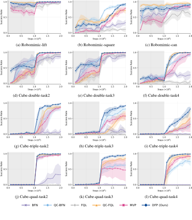

Drifting Field Policy (DFP) is a non-ODE one-step generative policy built on drifting models. It frames policy improvement as a Wasserstein-2 gradient flow toward the soft policy improvement target. The resulting drift field combines attraction toward high-Q actions with repulsion and regularization from the current or anchor policy.
Because the exact soft target is intractable, DFP uses a tractable top-K critic-selected action surrogate that makes the method easy to implement. Experiments on Robomimic and OGBench show that DFP achieves state-of-the-art performance among one-step and ODE-based generative policies.
Drifting Field Policy (DFP) turns policy improvement into a direct action-space drifting update for a one-step generative policy. Instead of learning a denoising chain or an ODE trajectory, DFP learns a pushforward map that transports noise samples into improved actions in a single step.
The policy is represented as the pushforward of a simple noise distribution through a conditional action generator. At inference time, DFP samples once and maps directly to an action, with no denoising chain or ODE solve.
DFP interprets policy improvement as a Wasserstein-2 gradient flow toward the soft policy improvement target. The ideal drift combines attraction toward high-Q actions with score-based repulsion and regularization around the current or anchor policy.
Because the exact soft target is intractable, DFP samples candidate actions from the old policy, selects the top-K actions under the critic, and uses those actions as a practical positive set in the drifting loss.
Diffusion, flow, and MeanFlow policies learn time-indexed velocities or ODE-related objectives, so reward or top-K supervision must be absorbed through the generation trajectory. DFP instead updates the action distribution directly through a one-step pushforward map.
DFP is evaluated on 12 manipulation tasks across Robomimic and OGBench under the offline-to-online RL setting. It achieves the best average success rate among all baselines, ranking first on 9 of 12 tasks and second-best on the remaining 3.
95.8%
Avg. Success
9/12
Best Tasks
+9.0 pp
over QC-FQL
+15.5 pp
over MVP
Success rate (%) on Robomimic and OGBench tasks under the offline-to-online RL setting. Each cell reports mean ± std over 5 seeds. Best results are shown in bold; second-best results are underlined.
| Method | Robomimic | Cube-double | Cube-triple | Cube-quadruple-100m | Avg. | ||||||||
|---|---|---|---|---|---|---|---|---|---|---|---|---|---|
| lift | square | can | task2 | task3 | task4 | task2 | task3 | task4 | task2 | task3 | task4 | ||
| BFN | 97.6±2 | 32.8±8 | 82.0±2 | 86.0±5 | 88.8±5 | 27.2±8 | 7.6±9 | 6.8±3 | 0.0±0 | 32.4±21 | 0.0±0 | 0.0±0 | 38.4 |
| QC-BFN | 99.6±1 | 88.4±4 | 90.6±3 | 99.8±0 | 99.8±0 | 92.6±6 | 87.4±10 | 80.8±4 | 33.4±9 | 95.8±2 | 63.2±10 | 74.2±11 | 83.8 |
| FQL | 96.8±2 | 10.8±7 | 58.4±8 | 93.2±8 | 91.2±5 | 6.0±6 | 0.4±1 | 6.4±8 | 0.0±0 | 0.0±0 | 0.0±0 | 0.0±0 | 30.3 |
| QC-FQL | 100.0±0 | 72.0±9 | 94.4±2 | 100.0±0 | 99.8±0 | 99.8±0 | 88.2±2 | 60.4±12 | 51.4±24 | 98.0±2 | 85.0±7 | 92.2±7 | 86.8 |
| MVP | 99.8±0 | 79.4±4 | 83.6±5 | 98.4±1 | 98.6±1 | 94.8±4 | 86.2±4 | 57.2±10 | 31.0±20 | 96.6±2 | 47.2±30 | 91.2±2 | 80.3 |
| DFP (Ours) | 100.0±0 | 93.2±2 | 90.6±3 | 100.0±0 | 99.6±1 | 99.6±1 | 98.4±1 | 91.6±2 | 81.2±6 | 99.6±1 | 96.6±2 | 99.0±2 | 95.8 |
Success rate over offline pretraining and online fine-tuning phases across Robomimic and OGBench tasks.

Representative DFP rollouts on Robomimic and OGBench manipulation tasks.
@article{koo2026driftingfieldpolicy,
title={Drifting Field Policy: A One-Step Generative Policy via Wasserstein Gradient Flow},
author={Koo, Juil and Park, Mingue and Choi, Jiwon and Min, Yunhong and Sung, Minhyuk},
journal={arXiv preprint},
year={2026}
}